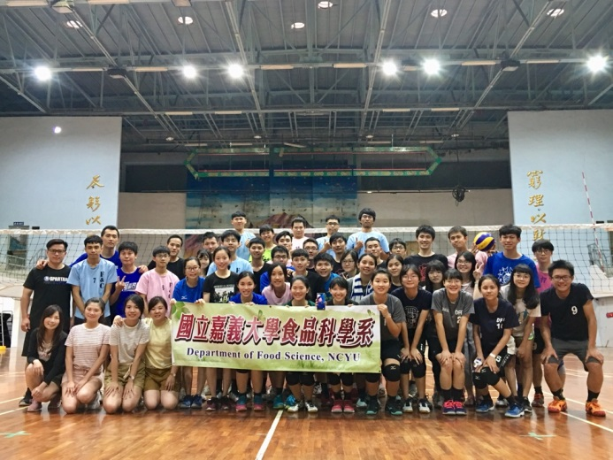

2019第九屆嘉義大學食品科學系系友盃排球賽
嘉義大學食品科學系為促進本系凝聚力，並增加在校生與畢業生之交流機會，今年延續以往的傳統，舉辦系友盃排球賽，邀請系上所有在校生以及畢業的系友們回嘉打球。
活動在 5月 25日、 26日於蘭潭校區嘉禾館內盛大舉行，學弟妹們除了一睹學長姐們在球場上的風采，更有機會與心目中的「偶像」成為一日隊友互相切磋；許多從外縣市回嘉的畢業系友，趁著這兩天回母校與好友相聚、並回味青春的共同回憶 -排球，聯絡感情也讓彼此的球技更上一層樓。
仍在學校就讀的同學與已出社會工作的系友，同時藉此活動互相交流認識。第一天賽後的聚餐時間，學長姐們分享了許多從業的經驗以及在職場上遇到的種種難題，學弟妹們也得以更加了解未來的生涯發展方向並尋求建議。
「球不落地，永不放棄！」排球教會我們：比賽結束前，奮力追球便隨時可能逆轉困境；排球教會我們：團隊合作與隊友間互相信任的重要性；排球拉近了這些熱血男孩、女孩們之間的距離，讓許多人在球場上找到了興趣與自信心。嘉義大學食品科學系的系友盃排球賽，將會繼續聯繫著食科系同學們的感情，往後更期許排球這項運動能夠發揚光大，更受大家所喜愛。
